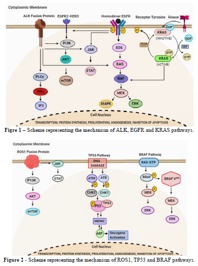

Genes involved in lung cancer in non-smokers associated with radon exposure

Resumo em Português
A exposição ao tabaco é o principal fator de risco para o desenvolvimento do câncer de pulmão; no entanto, sabe-se que pelo menos 10% e 20% dos homens e mulheres diagnosticados, respectivamente, nunca fumaram. Nesses indivíduos, o câncer de pulmão possui mecanismos genéticos distintos em comparação aos fumantes e compreende, na maioria dos casos, mutações condutoras (driver) em genes promotores de tumor capazes de desencadear a atividade carcinogênica. Os principais genes afetados nesse grupo de indivíduos são EGFR, ALK e ROS1. Atualmente, o principal fator de risco para o surgimento do câncer de pulmão em pessoas que nunca fumaram é a exposição ao gás radônio, um gás radioativo presente no ar atmosférico, solos, vegetação, residências e outras edificações. O risco do radônio está no fato de que, quando inalado, ele se deposita diretamente no tecido pulmonar. Esse elemento e seus produtos de decaimento emitem partículas alfa que podem causar danos graves ao DNA e, eventualmente, câncer de pulmão após anos de exposição. Esta revisão sistemática visa sintetizar o conhecimento sobre os mecanismos genéticos associados ao câncer de pulmão em nunca fumantes e reunir os estudos mais recentes sobre a associação do gás radônio com essa neoplasia.